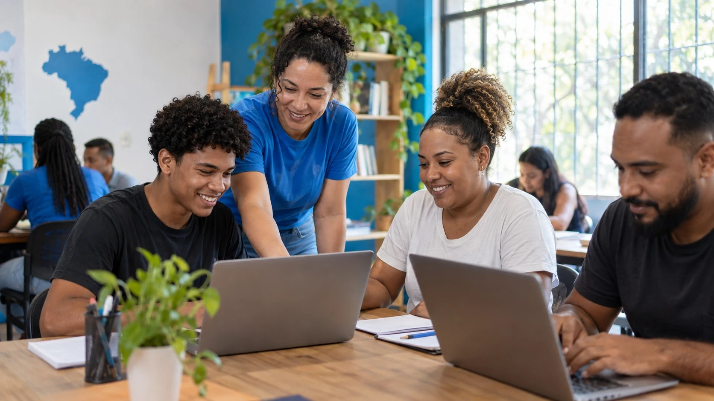

Tecnologia que aproxima pessoas e cria oportunidades
A Ponte Digital conecta comunidades, voluntários e parceiros para tornar o acesso à tecnologia mais justo.

Quem somos
A Ponte Digital é uma organização social dedicada a ampliar o acesso à tecnologia e às oportunidades de desenvolvimento pessoal e profissional. Por meio de projetos de inclusão digital, educação tecnológica, reaproveitamento de equipamentos e voluntariado, buscamos aproximar pessoas da transformação proporcionada pela tecnologia.
Nossa missão
Promover inclusão digital e ampliar oportunidades por meio da educação, do acesso à tecnologia e da colaboração entre voluntários, comunidades e parceiros.
Áreas de atuação
- Educação tecnológica e competências digitais;
- Reaproveitamento e doação de equipamentos;
- Mentoria de carreira em tecnologia;
- Descarte eletrônico responsável.
Conheça nossos projetos
As iniciativas da Ponte Digital unem aprendizado, acesso a equipamentos, orientação profissional e cuidado com o meio ambiente.
Contato
ONG Ponte DigitalRua da Conexão, 123, Centro — São Paulo, SP
(11) 4000-1234
contato@pontedigital.org.br